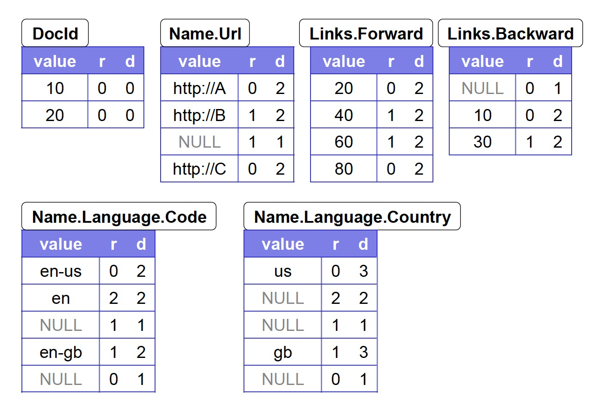

<!DOCTYPE HTML>
<html lang="en" class="sidebar-visible no-js light">
    <head>
        <!-- Book generated using mdBook -->
        <meta charset="UTF-8">
        <title>论文阅读笔记</title>
        <meta name="robots" content="noindex" />
        <!-- Custom HTML head -->
        <meta content="text/html; charset=utf-8" http-equiv="Content-Type">
        <meta name="description" content="">
        <meta name="viewport" content="width=device-width, initial-scale=1">
        <meta name="theme-color" content="#ffffff" />

        <link rel="icon" href="favicon.svg">
        <link rel="shortcut icon" href="favicon.png">
        <link rel="stylesheet" href="css/variables.css">
        <link rel="stylesheet" href="css/general.css">
        <link rel="stylesheet" href="css/chrome.css">
        <link rel="stylesheet" href="css/print.css" media="print">
        <!-- Fonts -->
        <link rel="stylesheet" href="FontAwesome/css/font-awesome.css">
        <link rel="stylesheet" href="fonts/fonts.css">
        <!-- Highlight.js Stylesheets -->
        <link rel="stylesheet" href="highlight.css">
        <link rel="stylesheet" href="tomorrow-night.css">
        <link rel="stylesheet" href="ayu-highlight.css">

        <!-- Custom theme stylesheets -->
    </head>
    <body>
        <!-- Provide site root to javascript -->
        <script type="text/javascript">
            var path_to_root = "";
            var default_theme = window.matchMedia("(prefers-color-scheme: dark)").matches ? "navy" : "light";
        </script>

        <!-- Work around some values being stored in localStorage wrapped in quotes -->
        <script type="text/javascript">
            try {
                var theme = localStorage.getItem('mdbook-theme');
                var sidebar = localStorage.getItem('mdbook-sidebar');

                if (theme.startsWith('"') && theme.endsWith('"')) {
                    localStorage.setItem('mdbook-theme', theme.slice(1, theme.length - 1));
                }

                if (sidebar.startsWith('"') && sidebar.endsWith('"')) {
                    localStorage.setItem('mdbook-sidebar', sidebar.slice(1, sidebar.length - 1));
                }
            } catch (e) { }
        </script>

        <!-- Set the theme before any content is loaded, prevents flash -->
        <script type="text/javascript">
            var theme;
            try { theme = localStorage.getItem('mdbook-theme'); } catch(e) { }
            if (theme === null || theme === undefined) { theme = default_theme; }
            var html = document.querySelector('html');
            html.classList.remove('no-js')
            html.classList.remove('light')
            html.classList.add(theme);
            html.classList.add('js');
        </script>

        <!-- Hide / unhide sidebar before it is displayed -->
        <script type="text/javascript">
            var html = document.querySelector('html');
            var sidebar = 'hidden';
            if (document.body.clientWidth >= 1080) {
                try { sidebar = localStorage.getItem('mdbook-sidebar'); } catch(e) { }
                sidebar = sidebar || 'visible';
            }
            html.classList.remove('sidebar-visible');
            html.classList.add("sidebar-" + sidebar);
        </script>

        <nav id="sidebar" class="sidebar" aria-label="Table of contents">
            <div class="sidebar-scrollbox">
                <ol class="chapter"><li class="chapter-item affix "><a href="index.html">Paper Notes</a></li><li class="chapter-item "><a href="databases/index.html"><strong aria-hidden="true">1.</strong> databases</a><a class="toggle"><div>❱</div></a></li><li><ol class="section"><li class="chapter-item "><a href="databases/column-stores-vs-row-stores.html"><strong aria-hidden="true">1.1.</strong> column-stores-vs-row-stores</a></li><li class="chapter-item "><a href="databases/kv/index.html"><strong aria-hidden="true">1.2.</strong> kv</a><a class="toggle"><div>❱</div></a></li><li><ol class="section"><li class="chapter-item "><a href="databases/kv/dynamo.html"><strong aria-hidden="true">1.2.1.</strong> dynamo</a></li></ol></li></ol></li><li class="chapter-item "><a href="datalayout/index.html"><strong aria-hidden="true">2.</strong> datalayout</a><a class="toggle"><div>❱</div></a></li><li><ol class="section"><li class="chapter-item "><a href="datalayout/c-store.html"><strong aria-hidden="true">2.1.</strong> cstore</a></li><li class="chapter-item "><a href="datalayout/dremel.html"><strong aria-hidden="true">2.2.</strong> dremel</a></li><li class="chapter-item "><a href="datalayout/rcfile.html"><strong aria-hidden="true">2.3.</strong> rcfile</a></li><li class="chapter-item "><a href="datalayout/orc.html"><strong aria-hidden="true">2.4.</strong> orc</a></li></ol></li><li class="chapter-item "><a href="fs/index.html"><strong aria-hidden="true">3.</strong> filesystem</a><a class="toggle"><div>❱</div></a></li><li><ol class="section"><li class="chapter-item "><a href="fs/polarfs.html"><strong aria-hidden="true">3.1.</strong> polarfs</a></li></ol></li><li class="chapter-item "><a href="storage/index.html"><strong aria-hidden="true">4.</strong> storage</a><a class="toggle"><div>❱</div></a></li><li><ol class="section"><li class="chapter-item "><a href="storage/kudu.html"><strong aria-hidden="true">4.1.</strong> kudu</a></li><li class="chapter-item "><a href="storage/bluestore.html"><strong aria-hidden="true">4.2.</strong> bluestore</a></li></ol></li></ol>
            </div>
            <div id="sidebar-resize-handle" class="sidebar-resize-handle"></div>
        </nav>

        <div id="page-wrapper" class="page-wrapper">

            <div class="page">
                <div id="menu-bar-hover-placeholder"></div>
                <div id="menu-bar" class="menu-bar sticky bordered">
                    <div class="left-buttons">
                        <button id="sidebar-toggle" class="icon-button" type="button" title="Toggle Table of Contents" aria-label="Toggle Table of Contents" aria-controls="sidebar">
                            <i class="fa fa-bars"></i>
                        </button>
                        <button id="theme-toggle" class="icon-button" type="button" title="Change theme" aria-label="Change theme" aria-haspopup="true" aria-expanded="false" aria-controls="theme-list">
                            <i class="fa fa-paint-brush"></i>
                        </button>
                        <ul id="theme-list" class="theme-popup" aria-label="Themes" role="menu">
                            <li role="none"><button role="menuitem" class="theme" id="light">Light (default)</button></li>
                            <li role="none"><button role="menuitem" class="theme" id="rust">Rust</button></li>
                            <li role="none"><button role="menuitem" class="theme" id="coal">Coal</button></li>
                            <li role="none"><button role="menuitem" class="theme" id="navy">Navy</button></li>
                            <li role="none"><button role="menuitem" class="theme" id="ayu">Ayu</button></li>
                        </ul>
                        <button id="search-toggle" class="icon-button" type="button" title="Search. (Shortkey: s)" aria-label="Toggle Searchbar" aria-expanded="false" aria-keyshortcuts="S" aria-controls="searchbar">
                            <i class="fa fa-search"></i>
                        </button>
                    </div>

                    <h1 class="menu-title">论文阅读笔记</h1>

                    <div class="right-buttons">
                        <a href="print.html" title="Print this book" aria-label="Print this book">
                            <i id="print-button" class="fa fa-print"></i>
                        </a>
                    </div>
                </div>

                <div id="search-wrapper" class="hidden">
                    <form id="searchbar-outer" class="searchbar-outer">
                        <input type="search" id="searchbar" name="searchbar" placeholder="Search this book ..." aria-controls="searchresults-outer" aria-describedby="searchresults-header">
                    </form>
                    <div id="searchresults-outer" class="searchresults-outer hidden">
                        <div id="searchresults-header" class="searchresults-header"></div>
                        <ul id="searchresults">
                        </ul>
                    </div>
                </div>
                <!-- Apply ARIA attributes after the sidebar and the sidebar toggle button are added to the DOM -->
                <script type="text/javascript">
                    document.getElementById('sidebar-toggle').setAttribute('aria-expanded', sidebar === 'visible');
                    document.getElementById('sidebar').setAttribute('aria-hidden', sidebar !== 'visible');
                    Array.from(document.querySelectorAll('#sidebar a')).forEach(function(link) {
                        link.setAttribute('tabIndex', sidebar === 'visible' ? 0 : -1);
                    });
                </script>

                <div id="content" class="content">
                    <main>
                        <h2 id="paper-notes"><a class="header" href="#paper-notes">Paper Notes</a></h2>
<p>阿里云数据库产品部要求每两周深读一篇领域相关的论文。</p>
<p>我是阿里云的元组，本仓库记录我读过的 paper 以及对每篇 paper 的理解、收货和疑问。</p>
<p>如何读论文我参考了 <a href="./assets/pdfs/how-to-read-a-paper.pdf">How to Read a Paper</a> 的 three-pass method:</p>
<ol>
<li>第一遍快速浏览论文（5-10 分钟）
<ul>
<li>仔细阅读题目、摘要和简介</li>
<li>阅读每个 section 及 sub-section 的题目，忽略其它内容</li>
<li>如果有数学公式则快速扫一眼以便了解其理论基础</li>
<li>阅读总结部分</li>
<li>简单浏览引用部分，看哪些是以前读过的</li>
</ul>
</li>
<li>第二遍仔细阅读论文但是忽略细节，比如证明部分。在阅读的过程中记录下不懂的术语以及想要问作者的问题（对于有经验的读者需要 1 小时）
<ul>
<li>仔细阅读论文中的插图、图表或其它插画，尤其注意那些横纵坐标的含义</li>
<li>标记下自己没有阅读过的相关引用</li>
</ul>
</li>
<li>为了完全理解一篇论文，往往需要阅读第三遍。第三遍则需要读者从作者的角度出发，试着在脑子里重新实现一遍论文的工作（初学者需要多个小时，对于有经验的读者也需要1-2个小时）</li>
</ol>
<div style="break-before: page; page-break-before: always;"></div><h2 id="databases"><a class="header" href="#databases">databases</a></h2>
<ul>
<li><strong><a href="databases/colum-stores-vs-row-stores.html">Column-stores vs. row-stores: how different are they really?</a></strong></li>
<li><strong><a href="databases/kv/index.html">KV databases</a></strong>
<ul>
<li><strong><a href="databases/kv/dynamo.html">Dynamo: Amazon’s Highly Available Key-value Store</a></strong></li>
</ul>
</li>
</ul>
<div style="break-before: page; page-break-before: always;"></div><h3 id="a-hrefdatabasesassetspdfscolumn-stores20vs20row-stores-20how20different20are20they20reallypdfcolumnstores-vs-rowstores-how-different-are-they-reallya"><a class="header" href="#a-hrefdatabasesassetspdfscolumn-stores20vs20row-stores-20how20different20are20they20reallypdfcolumnstores-vs-rowstores-how-different-are-they-reallya"><a href="databases/../assets/pdfs/Column-Stores%20vs.%20Row-Stores-%20How%20Different%20Are%20They%20Really.pdf">ColumnStores vs. RowStores: How Different Are They Really?</a></a></h3>
<blockquote>
<p>SIGMOD 2008 Daniel J. Abadi, etc.</p>
<p>https://dl.acm.org/doi/10.1145/1376616.1376712</p>
</blockquote>
<p>列存数据库在数仓、决策支持、BI 等分析型应用中被证明比传统行存数据库的表现要好出一个量级以上，其原因也显而易见：列存数据库对于只读查询按需访问所需列，因而更 <code>IO efficient</code>。这种直观的感受不禁让人猜想：如果用行存数据库模拟列存数据库，使得每个列单独访问，是否可以获得列存数据库的性能收益？</p>
<p>这引出了论文要回答的第一个问题:</p>
<ul>
<li>Are these performance gains due
to something fundamental about the way column-oriented DBMSs
are internally architected, or would such gains also be possible in
a conventional system that used a more column-oriented physical
design?</li>
</ul>
<p>作者使用三种技术在行存数据库中模拟列存，其查询性能都非常差。那么是什么造就了列存数据库的优越性能呢？</p>
<p>这引出了论文要回答的第二个问题:</p>
<ul>
<li>Which of the many column-database specific optimizations proposed
in the literature are most responsible for the significant performance
advantage of column-stores over row-stores on warehouse
workloads?</li>
</ul>
<h3 id="roworiented-execution"><a class="header" href="#roworiented-execution">ROWORIENTED EXECUTION</a></h3>
<p>作者在 System X (一款商业行存数据库) 上使用了三种方法来模拟列存数据库。通过在 SSBM 上的实验发现这些方法都不能取得较好的性能。</p>
<h4 id="1-vertical-partitioning"><a class="header" href="#1-vertical-partitioning">1. Vertical Partitioning</a></h4>
<p>将表进行垂直切分是最直观的方式，但这需要将切分后的数据进行关联。行存不具有列存将每列数据都按照相同的顺序进行存储的特性，因而一个逻辑表垂直切分出的每一个物理表，都保函两列数据 —— 该列的原始数据和 &quot;position&quot; column（通常是 primary key），查询需要被改写为基于 &quot;position&quot; column 的 join，不管是 Hash join 还是 index join，性能都较差。</p>
<p>这种方式由于在每个列对应的表中都存储了 &quot;position&quot; column，浪费了存储空间和磁盘带宽。另外行存数据库的每一行数据都会保存一个相对较大的 header，这进一步浪费了存储空间。</p>
<h4 id="2-index-only-plans"><a class="header" href="#2-index-only-plans">2. Index-only plans</a></h4>
<p>在基础行存表的之外对每一列存储一个（value, record-id）的非聚簇索引，这样可以不存储重复数据，且没有 tuple header 的存储空间浪费。这种方式对没有谓词的返回列需要进行全表扫描。</p>
<h4 id="3-materialized-views"><a class="header" href="#3-materialized-views">3. Materialized Views</a></h4>
<p>对查询的中的每个表所需的列生成物化视图，使用这种方式减少查询需要读取的数据量，以期望该种方法取得优于另外两种方法的性能。</p>
<h3 id="columnoriented-execution"><a class="header" href="#columnoriented-execution">COLUMNORIENTED EXECUTION</a></h3>
<p>上述行存模拟列存不能取得较好的性能收益在于，在 SSBM 场景下，C-Store 特有的 <code>Compression</code>、<code>Late Materialization</code>、<code>Block Iteration</code> 和 <code>Invisible Join</code> 等特性对查询性能具有极大的帮助，论文中将 C-Store 进行逐一特性阉割，将其<code>退化</code>为一个行存数据库，得出各因素对于性能的影响:</p>
<ul>
<li>Compression improves performance by almost a factor of two on average</li>
<li>Late materialization results in almost a factor of three performance improvement</li>
<li>Block-processing can improve performance anywhere from a factor of only 5% to 50% depending on whether compression has already been removed</li>
<li>The invisible join improves performance by 50-75%</li>
</ul>
<p><strong>Compression</strong> 除了通过节省 I/O 来提升查询性能，其 <code>operate directly on compressed data</code> 的特性进一步提高了性能。</p>
<p><strong>Late Materialization</strong> 和 <strong>Block Iteration</strong> 合在一起被称为 <code>Vectorvectorized query processing</code>。</p>
<p><strong>Invisible Join</strong> 是一种 <code>Late materialized join</code> 技术，但减少了需要读取的数据，具体细节论文中的例子做了简明的解释。</p>
<h3 id="思考"><a class="header" href="#思考">思考</a></h3>
<p>基于 Btree 的行存数据库中的一些特性是为了解决某些实际问题（写优化），比如论文中提到的:</p>
<ul>
<li>每行数据都有 header =&gt; 为了实现 MVCC 而存在</li>
<li>数据并非物理有序 =&gt; 有些存储引擎使用 directory slots 的方式存储数据以避免数据插入时过多的数据移动</li>
</ul>
<p>所以能够直观地判断出在基于 Btree 的行存数据库中模拟列存不会有好的性能收益。如果是 LSM Tree 呢？虽然可以实现 Late Materialization，但 Compression 和 Block iteration 可能不如在 Column Store 中的收益明显。</p>
<div style="break-before: page; page-break-before: always;"></div><h2 id="kv-databases"><a class="header" href="#kv-databases">kv databases</a></h2>
<ul>
<li><strong><a href="databases/kv/dynamo.html">Dynamo: Amazon’s Highly Available Key-value Store</a></strong></li>
</ul>
<div style="break-before: page; page-break-before: always;"></div><h3 id="a-hrefdatabaseskvdynamo-amazons-highly-available-key-value-storea"><a class="header" href="#a-hrefdatabaseskvdynamo-amazons-highly-available-key-value-storea"><a href="databases/kv/">Dynamo: Amazon’s Highly Available Key-value Store</a></a></h3>
<div style="break-before: page; page-break-before: always;"></div><h2 id="data-layout"><a class="header" href="#data-layout">data layout</a></h2>
<ul>
<li><strong><a href="datalayout/c-store.html">C-Store: A Column-oriented DBMS</a></strong></li>
<li><strong><a href="datalayout/dremel.html">Dremel: Interactive Analysis of WebScale Datasets</a></strong></li>
<li><strong><a href="datalayout/rcfile.html">RCFile: A fast and space-efficient data placement structure in MapReduce-based warehouse systems</a></strong></li>
<li><strong><a href="datalayout/orc.html">Major Technical Advancements in Apache Hive</a></strong></li>
</ul>
<div style="break-before: page; page-break-before: always;"></div><h3 id="a-hrefdatalayoutassetspdfscstore-vldb05pdfc-store-a-column-oriented-dbmsa"><a class="header" href="#a-hrefdatalayoutassetspdfscstore-vldb05pdfc-store-a-column-oriented-dbmsa"><a href="datalayout/../assets/pdfs/cstore-vldb05.pdf">C-Store: A Column-oriented DBMS</a></a></h3>
<blockquote>
<p>VLDB 2005 Mike Stonebraker, etc.</p>
<p>https://dl.acm.org/doi/10.5555/1083592.1083658</p>
</blockquote>
<p>行存（row store）RDBMS 作为当时的主流，通常将同一行记录的所有属性存储在磁盘的连续空间，以获得卓越的写性能，这种方式也被称为 write-optimized，适用于 OLTP 场景。而数据仓库、CRM 等需要 ad-hoc 查询大量数据的系统应该具有 read-optimized 的特性，此类系统往往通过列存（colunm store）架构来获得更有效的性能（如 Sybase IQ, Addamark, KDB）。</p>
<p>列存架构中，查询操作只需按需读取所需要的列，避免将无关数据读取到内存。CPU 的性能增速要远高于磁盘的带宽增速，在 read-optimized 系统，用 CPU cycles 换取磁盘带宽是一件值得的事情，列存通过 1) code 2) densepack 两种方式达到以 CPU cycles 换取磁盘带宽的目的。</p>
<p>C-Store 是作者提出的一个新的列存数据库，具有如下革新特性：</p>
<ol>
<li>A hybrid architecture with a WS component optimized for frequent insert and update and an RS component optimized for query performance</li>
<li>Redundant storage of elements of a table in several overlapping projections in different orders, so that a query can be solved using the most advantageous projection</li>
<li>Heavily compressed columns using one of several coding schemes</li>
<li>A column-oriented optimizer and executor, with different primitives than in a row-oriented system</li>
<li>High availability and improved performance through K-safety using a sufficient number of overlapping projections</li>
<li>The use of snapshot isolation to avoid 2PC and locking for queries</li>
</ol>
<h3 id="混合架构"><a class="header" href="#混合架构">混合架构</a></h3>
<p>人们对实时数仓数据可见性的延迟要求越来越高（toward 0），C-Store 的 <code>Writeable Store</code> 模块支撑频繁地插入和更新，<code>Read-optimized Store</code> 模块提供高性能查询，<code>Tuple Mover</code> 则负责将数据从 WS merge 到 RS，这是结构非常类似 LSM。</p>
<h3 id="数据模型"><a class="header" href="#数据模型">数据模型</a></h3>
<p>C-Store 支持标准关系数据库的逻辑数据模型 —— 数据库由表构成，每个表含多个数据列，表的属性可以作为 primary key 或其它表的 foreign key。但 C-Store 的物理存储模型不同于这种逻辑模型，是以 projection 进行存储的。</p>
<ul>
<li>一个 projection 存储了一个逻辑表的一个或多个列属性，它还可以存储其它表的一个或多个属性以表示外键</li>
<li>一个 projection 和它的锚表（anchor table）具有的行数相同</li>
<li>一个 projection 具有一个 <code>sort key</code>，由该 projection 的一个或多个列构成。同一个 projection 中的 K 个属性各自存储于一个数据结构中，且都按照 <code>sort key</code> 进行排序</li>
<li>每个 projection 都被水平切分（Horizontally partitioned）为一个或多个 segment，切分的依据为 <code>sort key</code>，这样每个 segment 都对应一段 key range</li>
<li>由于每个 projection 的 <code>sort key</code> 不一致，因此需要 <code>join indexes</code> 来维持不同 projection 的对应关系</li>
</ul>
<h4 id="storage-key"><a class="header" href="#storage-key">Storage key</a></h4>
<ul>
<li>在 RS 上，storage key 是记录在 segement 上的序数，不存储且按需计算获得</li>
<li>在 WS 上执行引擎给每一次插入赋予一个唯一的 storage key, 大于 RS 上 storage key 的最大值</li>
<li>WS 和 RS 按照相同的规则进行水平切分，因此 RS segement 和 WS segent 是 1:1 对应的，因此 (sid, storage_key) 只能存在 RS 或 WS 中的一个</li>
<li>由于 WS 在尺寸上相对较小，因此使用 B-tree 直接存储 projection 的每一列，按 storage key 排序，另外（sort key， storage key）以 <code>sort key</code> 作为 key 保存为 B-tree。这样就根据 sort key 快速定位到 storage key，然后再根据 storage key 找到对应的列值</li>
<li>WS 构建在 BerkeleyDB 的 B-tree 结构上</li>
</ul>
<h4 id="join-indices"><a class="header" href="#join-indices">Join Indices</a></h4>
<blockquote>
<p>If T1 and T2 are two projections that cover a table T, a join index from the M segments in T1 to the N
segments in T2 is logically a collection of M tables, one per segment, S, of T1 consisting of rows of the form:</p>
<p>(s: SID in T2, k: Storage Key in Segment s)</p>
</blockquote>
<p>Join Index 按照 T1 的切分方式进行切分，且跟 T1 的 segement 保存在一起。</p>
<p>Join Index 在更新的时候非常难以维护，因此会把每个 column 存储在多个 projection 上，但这对 DBA 设计表结构提出了更高的要求，文中提到他们正在写一个自动化表结构设计工具。</p>
<h3 id="coding-schema"><a class="header" href="#coding-schema">Coding Schema</a></h3>
<p>projection 中的每一列都紧凑地存储在一个结构体中，基于该列是否是 <code>sort key</code> 以及该列不同数据的多少，文中给出了四种编码方式：</p>
<ol>
<li>Self-order, few distinct values</li>
<li>Foreign-order, few distinct values</li>
<li>Self-order, many distinct values</li>
<li>Foreign-order, many distinct values</li>
</ol>
<h3 id="column-oriented-optimizer-and-executor"><a class="header" href="#column-oriented-optimizer-and-executor">Column-oriented optimizer and executor</a></h3>
<p>这块不懂，后面有机会再补充</p>
<h3 id="high-availability"><a class="header" href="#high-availability">High availability</a></h3>
<p>由于不同的列存在与多个 projection，C-Store 基于此可以实现 K-safe 的系统。</p>
<h3 id="snapshot-isolation"><a class="header" href="#snapshot-isolation">Snapshot Isolation</a></h3>
<blockquote>
<p>Snapshot isolation works by allowing read-only transactions to access the database as
of some time in the recent past, before which we can guarantee that there are no uncommitted transactions.</p>
</blockquote>
<p>对于只读事务，可以根据时间戳来判断记录的可见性，因此可以不用加锁</p>
<p>对于 Read-write 事务，C-Store 遵循严格的 two-phase locking，并使用了 NO-Force, STEAL 策略。</p>
<p>事务相关的内容感觉跟 Mysql 有些相像，但有些内容还没搞明白，这块后面有机会再研究一下。</p>
<div style="break-before: page; page-break-before: always;"></div><h3 id="a-hrefdatalayoutassetspdfsdremelpdfdremel-interactive-analysis-of-web-scale-datasetsa"><a class="header" href="#a-hrefdatalayoutassetspdfsdremelpdfdremel-interactive-analysis-of-web-scale-datasetsa"><a href="datalayout/../assets/pdfs/dremel.pdf">Dremel: Interactive Analysis of Web-Scale Datasets</a></a></h3>
<blockquote>
<p>VLDB 2010</p>
<p>https://dl.acm.org/doi/10.14778/1920841.1920886</p>
</blockquote>
<p>Dremel 是 Google 内部使用的一个可扩展、交互式数据分析系统，通过将 <strong>multi-level execution trees</strong> 和<strong>列存数据布局</strong>结合，可以在秒级时间量级执行万亿（trillion）行表的聚集查询。</p>
<p>Dremel 架构借用了分布式搜索引擎 <code>serving tree</code> 的概念，查询被下推到树的各个节点并在每一步进行改写，通过聚合从低层收到的回复来组装结果；另外，Dremel 提供了一个 SQL-like 的高级语言来表达 <code>ad hoc</code> 查询，不同于 Pig 和 Hive，Dremel 查询不会转换成 MR 任务。</p>
<p>Dremel 使用了列存格式来存储数据，以减少不相关的数据读取和 CPU 消耗（due to cheaper compression）。虽然列存格式在 OLAP 领域并不少见，但 Dremel 开创性地将其扩展到了嵌套数据格式。</p>
<h3 id="数据模型-1"><a class="header" href="#数据模型-1">数据模型</a></h3>
<p>Dremel 的数据模型是基于强类型的嵌套记录，抽象语法:</p>
<pre><code class="language-txt">t = dom | &lt;A1:t[*|?], ..., An:t[*|?]&gt;

t 是原子类型或一个记录类型，原子类型包括整型、浮点数、字符串等
Ai 为记录的第 i 个字段，其后的 [*|?] 表示其重复类型
    * 表示该字段为 Repeated
    ？表示该字段为 Optional
    无标记则表示该字段为 Required
</code></pre>
<p>这种语法可以使用 ProtoBuffer 进行表示，PB 序列化后的数据适合用于 RPC，不适合作为下盘格式。这里我们认为 PB 数据为行存格式，下面通过例子描述如何将 PB 的数据转化为 Dremel 的列存格式。</p>
<p><strong>Schema</strong></p>
<pre><code class="language-proto">message Document {
    required int64 DocId;
    optional group Links {
        repeated int64 Backward;
        repeated int64 Forward;
    }
    repeated group Name {
        repeated group Language {
            required string Code;
            optional string Country;
        }
        optional string Url;
    }
}
</code></pre>
<p>如上的 Schema 非常类似 JSON，理解起来应该不难。除了多重性标记之外，<code>full path</code> 的概念跟后面的 Repetition Level 和 Definition Level 有着密切的关系：</p>
<table><thead><tr><th>Fild</th><th>Full Path</th></tr></thead><tbody>
<tr><td>DocId</td><td>DocId</td></tr>
<tr><td>Backward</td><td>Links.Back</td></tr>
<tr><td>Language</td><td>Name.Language</td></tr>
<tr><td>Country</td><td>Name.Language.Country</td></tr>
</tbody></table>
<p><strong>两行符合上述 Schema 的记录</strong></p>
<p><em>r1</em></p>
<pre><code class="language-yml">DocId: 10
Links
    Forward: 20
    Forward: 40
    Forward: 60
Name
    Language
        Code: 'en-us'
        Country: 'us'
    Language
        Code: 'en'
    Url: 'http://A'
Name
    Url: 'http://B'
Name
    Language
        Code: 'en-gb'
        Country: 'gb'
</code></pre>
<p><em>r2</em></p>
<pre><code class="language-yml">DocId: 20
Links
    Backward: 10
    Backward: 30
    Forward: 80
Name
    Url: 'http://C'
</code></pre>
<p>对于这种嵌套模式，如果单纯将同一字段的数据连续存储，不能确定一个数据属于哪条记录。Dremel 引入 <code>Repetition Level</code> 和 <code>Definition Level</code> 来解决这个问题。</p>
<p><strong>Repetiton Level</strong> 记录该值在 <code>full path</code> 的哪一级进行重复，以 Name.Language.Code 为例，它含有两个可重复字段：<code>Name</code> 和 <code>Language</code>，因此 <code>Code</code> 的 Repetition Level 可取的值为 0,1,2:</p>
<ul>
<li>0 表示一个新行</li>
<li>1 表示该值最近的重复级别为 Name</li>
<li>2 表示该值最近的重复级别为 Language</li>
</ul>
<p>对 r1 进行 Repetition Level 标注：</p>
<pre><code class="language-yml">                  Repetition Level
DocId: 10                   0
Links
    Forward: 20             0
    Forward: 40             1
    Forward: 60             1
Name
    Language
        Code: 'en-us'       0
        Country: 'us'       0
    Language
        Code: 'en'          2
    Url: 'http://A'         0
Name
    Url: 'http://B'         1
Name
    Language
        Code: 'en-gb'       1
        Country: 'gb'       1
</code></pre>
<p>注意到 r1 的第二个 Name 中没有任何 Code，但为了表示 en-gb 是属于第三个 Name，在 Code 列中插入了一条 NULL(repetition level 为 1)。Code 在 Language 中为 <strong>Required</strong> 字段，所以它为 NULL 隐含了 Language 也为 NULL。因此需要额外的信息来数据属于哪个级别，以避免构造出多余的数据结构。</p>
<p><strong>Definition Level</strong> 表示了 full path 上的 optional 或 repeated 字段实际存在的个数，对于同列非 NULL 的所有记录，其值是相同的。</p>
<p>对 r1 进行 Definition Level 标注：</p>
<pre><code class="language-yml">                  Repetition Level      Definition Level
DocId: 10                   0               0
Links
    Forward: 20             0               2
    Forward: 40             1               2
    Forward: 60             1               2
Name
    Language
        Code: 'en-us'       0               2
        Country: 'us'       0               3
    Language
        Code: 'en'          2               2
    Url: 'http://A'         0               2
Name
    Url: 'http://B'         1               2
Name
    Language
        Code: 'en-gb'       1               2
        Country: 'gb'       1               3
</code></pre>
<p>Definition Level 主要对 NULL 有意义，在恢复数据的时候可以避免恢复出多余的结构。下图是 r1、r2 全量的列存结构：</p>
<p></p>
<p>假设没有 Definition Level，尝试恢复 r1 的数据结构，会得到如下的结果：</p>
<p>读第一行 en-us：</p>
<pre><code class="language-yml">Document
    Name
        Language
            code: 'en-us'
</code></pre>
<p>读第二行 en：</p>
<pre><code class="language-yml">Document
    Name
        Language
            code: 'en-us'
        Language
            code: 'en'
</code></pre>
<p>读第三行 NULL：</p>
<pre><code class="language-yml">Document
    Name
        Language
            code: 'en-us'
        Language
            code: 'en'
    Name
        Language
</code></pre>
<p>读第四行 en-gb：</p>
<pre><code class="language-yml">Document
    Name
        Language
            code: 'en-us'
        Language
            code: 'en'
    Name
        Language
    Name
        Language
            code: 'en-gb'
</code></pre>
<p>可以看出第二个 Name 中构造出了 Language，这在 r1 是不存在的。但如果有了 Definition Level，在读取第三行的时候就能知道实际只存在一个字段，也就是 Name，这样在构造的时候就不会构造 Language 结构:</p>
<p>读第三行 NULL：</p>
<pre><code class="language-yml">Document
    Name
        Language
            code: 'en-us'
        Language
            code: 'en'
    Name
</code></pre>
<p>在实际的编码中会对上面的结构进行编码以减少不必要的存储空间。至此我们对 Dremel 的列存格式有了一定的了解。论文的附录有记录切分和组装的具体算法，这里不再描述。</p>
<h3 id="查询执行"><a class="header" href="#查询执行">查询执行</a></h3>
<p>Dremel 使用 <code>multi-level serving tree</code> 来执行查询，根节点收到请求，读取 metadata 并据此将请求路由到下一级，直到叶子节点，叶子节点请求存储层或直接访问本地盘获取数据，处理之后逐级汇总到根节点。请求在路由到下一级之前会进行改写。</p>
<p></p>
<p>Dremel 是一个多用户系统，其 query dispatcher 会根据任务优先级和负载均衡进行调度。通过设置返回结果时必须扫描 tablets 的百分比（比如 98%），牺牲一定精确性来换取性能。</p>
<p>Paper 中没有提到索引、连接、数据更新相关的内容。</p>
<p><a href="https://github.com/apache/parquet-format">Apache Parquet</a> 的实现参考了 Dremel 的数据模型，<a href="https://github.com/apache/drill">Apache Drill</a> 的实现参考了 Dremel 的查询模型。</p>
<h4 id="references"><a class="header" href="#references">References:</a></h4>
<p>[1] <a href="https://blog.twitter.com/engineering/en_us/a/2013/dremel-made-simple-with-parquet">Dremel made simple with Parquet</a><br>
[2] <a href="https://github.com/julienledem/redelm/wiki/The-striping-and-assembly-algorithms-from-the-Dremel-paper">The striping and assembly algorithms from the Dremel paper</a></p>
<div style="break-before: page; page-break-before: always;"></div><h3 id="a-hrefdatalayoutassetspdfsrcfilepdfrcfile-a-fast-and-space-efficient-data-placement-structure-in-mapreduce-based-warehouse-systemsa"><a class="header" href="#a-hrefdatalayoutassetspdfsrcfilepdfrcfile-a-fast-and-space-efficient-data-placement-structure-in-mapreduce-based-warehouse-systemsa"><a href="datalayout/../assets/pdfs/RCFile.pdf">RCFile: A fast and space-efficient data placement structure in MapReduce-based warehouse systems</a></a></h3>
<blockquote>
<p>IEEE 27th International Conference on Data Engineering, 2011</p>
<p>https://ieeexplore.ieee.org/document/5767933</p>
</blockquote>
<p>基于 MapReduce 的数仓系统在大数据分析领域扮演着一个非常重要的角色，在这样的系统中 <code>data placement structure</code> 是影响数仓性能的关键要素。作者根据对 Facebook 生产系统的观察与分析，总结了 <code>data placement structure</code> 需要满足大数据处理的四个要求:</p>
<ol>
<li>Fast data loading</li>
<li>Fast query processing</li>
<li>Highly efficient storage space utilization</li>
<li>Strong adaptivity to highly dynamic workload patterns</li>
</ol>
<p>文章对三种在传统数据库系统接受度甚广的数据格式 —— row-stores, column-stores, hybrid-stores —— 基于 MapReduce 使用场景分析了它们不适合分布式大数据分析系统的原因，并提出了一种新的数据格式 RCFile(Record Columnar File)。</p>
<h3 id="horizontal-row-store"><a class="header" href="#horizontal-row-store">Horizontal Row-store</a></h3>
<p>row-store 将一行记录的所有字段按照表的定义逐一顺序存放在磁盘页:</p>
<p></p>
<p>行存对于只读的数仓系统的弱点已经被充分讨论过，包括：</p>
<ul>
<li>对于只关心少数几个列的查询，行存不能减少无用列的读取，因而很难提供快速的查询</li>
<li>各列不同类型的数据混合存储使得行存很难获得较高的压缩比（虽然有研究指出通过结合<code>熵编码</code>和<code>列相关性</code>能够为行存提供优于列存的压缩比，但解压会消耗更多的资源）</li>
</ul>
<p><strong>行存满足大数据处理四个要求中的 1、4</strong></p>
<h3 id="vertical-column-store"><a class="header" href="#vertical-column-store">Vertical Column-store</a></h3>
<p>在数仓系统中广泛被使用的读优化的列存格式分为两种，一种是将每一列作为一个 <code>sub-relation</code> 单独存储，典型代表如 <code>Decomposition Storage Model(DSM)</code> 和 MonetDB；另一种将关系中的所有列组合成多个的 <code>column group</code>，并且允许不同 <code>column group</code> 之间有 overlap，典型代表如 <code>C-store</code> 和 Yahoo Zebra。文中称第一种模式为 <code>column-store</code>，将第二种模式称作 <code>column-group</code>。</p>
<p><code>column-group</code> 模式中单个 <code>group</code> 的数据组织方式依赖具体实现，C-store 中每个 group 采用 <code>column-store</code>，而 Zebra 中的每个 group 则采用行存存储。下图是一个 <code>column-group</code> 的示例：</p>
<p></p>
<p><code>column-store</code> 能够避免读取无用列的数据，并能提供较高的压缩比。但在 HDFS 中，不同列的数据不能保证存储在同一个 DataNode 上，因此重构数据时存在大量网络开销。</p>
<p><code>column-group</code> 的每个 group 相当于一个物化视图，可以避免数据重构的网络开销，但由于预先设计好的 projection 只对有限的查询语句有效，因此不支持 <code>highly dynamic workload</code>。而且由于 <code>column-group</code> 的数据存在 overlap，难免会造成数据空间的膨胀。</p>
<p><strong><code>column-store</code> 满足大数据处理四个要求中的 1、3、4</strong></p>
<p><strong><code>column-group</code> 满足大数据处理四个要求中的 1、2</strong></p>
<h3 id="hybrid-store-pax"><a class="header" href="#hybrid-store-pax">Hybrid Store: PAX</a></h3>
<p>PAX 使用了一种数据混合放置的策略，同一行数据的各字段仍然存储在同一个磁盘页，只是将该磁盘页的多行记录进行了重新组织，各个列的值连续存储在 mini-page 中，并在 page header 中存储 mini-page 的指针。</p>
<p>PAX 的主要目的是为了提高 CPU 缓存命中率（减少 false sharing），鉴于以下三点原因，它不能满足较高的存储空间利用率及快速查询：</p>
<ol>
<li>数据未进行压缩</li>
<li>由于单个磁盘页存储的数据内容不变，PAX 不能消除无用列的磁盘读 I/O</li>
<li>PAX 使用 fixed page 作为数据记录组织的基本单元</li>
</ol>
<p><strong>PAX 满足大数据处理的四个要求中的 1、4</strong></p>
<h3 id="rcfile"><a class="header" href="#rcfile">RCFile</a></h3>
<p>RCFile 在设计上借用了 PAX 的理念：<code>First horizontally-partion, then vertically-partion</code>。其实现在 HDFS 之上，表的数据布局：</p>
<ol>
<li>一个表有多个 HDFS blocks</li>
<li>在每个 HDFS block 中，按照 row group 为基本单元对记录进行组织，根据 row group size 和 HDFS block size，一个 HDFS block 可以对应一个或多个 row group</li>
<li>每个 row group 包含三个分区: sync marker、metadata header、table data</li>
</ol>
<p></p>
<p>RCFile 使用 Run Length Encoding 对 metadata header 进行压缩，table data 的数据各列数据使用 Gzip 进行独立压缩（A future work: 根据不同类型自动选择最佳的压缩算法）。</p>
<p>RCFile 数据追加写的方式总结如下：</p>
<blockquote>
<ol>
<li>
<p>RCFile creates and maintains an in-memory column holder for each column. When a record is appended,
all its fields will be scattered, and each field will be appended into its corresponding column holder. In
addition, RCFile will record corresponding metadata of each field in the metadata header.</p>
</li>
<li>
<p>RCFile provides two parameters to control how many records can be buffered in memory before they are
flushed into the disk. One parameter is the limit of the number of records, and the other parameter is the limit
of the size of the memory buffer.</p>
</li>
<li>
<p>RCFile first compresses the metadata header and stores it in the disk. Then it compresses each column holder
separately, and flushes compressed column holders into one row group in the underlying file system.</p>
</li>
</ol>
</blockquote>
<p>RCFile 可以根据查询语句的需要只读取 row group 中所需要的列。假设 tbl 有四列数据（c1, c2, c3, c4），如下语句只需读取并解压 c1 和 c4 列</p>
<pre><code class="language-sql">select c1 from tbl where c4 = 1
</code></pre>
<p>当一个 row group 中没有满足 c4 = 1 的记录时，甚至不需要读取 c1 列，这被称为 <code>Lazy Decompression</code>。row group size 的大小也会影响 Lazy Decompression 的有效性，因为当 row group size 比较大时，命中满足条件的行的几率会更大，从而使得 Lazy Decompression 更容易失效。</p>
<p>row group size、压缩率、Lazy Decompression 之间的关系存在 trade off，文中使用数据进行了佐证。</p>
<p><strong>RCFile 满足大数据处理的四个要求中的 1、2、3、4</strong></p>
<h4 id="more-readings"><a class="header" href="#more-readings">More Readings:</a></h4>
<p>[1] <a href="https://www.youtube.com/watch?v=1rOSia_r8hI">RCFile vs. ORC</a> from Hadoop In Real World</p>
<div style="break-before: page; page-break-before: always;"></div><h3 id="a-hrefdatalayoutassetspdfsmajor_technical_advancements_in_apache_hivepdfmajor-technical-advancements-in-apache-hivea"><a class="header" href="#a-hrefdatalayoutassetspdfsmajor_technical_advancements_in_apache_hivepdfmajor-technical-advancements-in-apache-hivea"><a href="datalayout/../assets/pdfs/Major_Technical_Advancements_in_Apache_Hive.pdf">Major Technical Advancements in Apache Hive</a></a></h3>
<blockquote>
<p>SIGMOD 2014</p>
<p>https://dl.acm.org/doi/10.1145/2588555.2595630</p>
</blockquote>
<p>Apache Hive 是 Hadoop 生态被广泛使用的数仓系统，随着用量的增大增多，出现了一些短板，主要体现在 <code>file formats</code>、<code>query planning</code> 及 <code>query execution</code> 三个方面。Hive 需要更好的文件格式来充分利用存储空间并加速数据访问；更好的查询优化器及执行器来提高资源利用率及执行性能。</p>
<p>本篇笔记主要关注论文中的 <code>file formats</code>，也就是 ORC(Optimized Record Columnar) 相关的内容。</p>
<p>Hive 最初使用两种简单的文件格式：TextFile(plain text data) 和 SequenceFile(binary key/value pairs)，由于这两种存储对存储数据类型不可知（data-type-agnostic）且数据以 one-row-at-a-time 的方式进行存储，数据很难被有效压缩。Hive 0.4 引入的 <a href="datalayout/./rcfile.html">RCFile</a> 列存格式在存储效率上有所提升，但其仍然对数据类型不可知且逐行进行序列化，在这种格式下，data-type specific compression 未能被有效利用。另外，RCFile 主要为 <code>sequential data scan</code> 而设计，它并未提供任何索引来帮助查询跳过无用数据。文中认为 Hive <code>file formats</code> 的两个不足：</p>
<ul>
<li>data-type-agnostic file formats and one-row-at-a-time serialization prevent data values being efficiently compressed</li>
<li>data reading efficiency is limited by the lack of indexes and non-decomposed columns with complex data types</li>
</ul>
<h3 id="file-format"><a class="header" href="#file-format">File Format</a></h3>
<p>为了解决存储和数据访问方面的不足，Hive 设计并实现了一个增强版的文件格式：Optimized Record Columnar File（ORC File）。其 3 个主要改进包括:</p>
<ul>
<li>ORC file writer 对数据类型可知，通过增加各种 type-specific 数据编码模式来更有效地存储数据</li>
<li>引入各种索引来帮助 ORC reader 查找所需数据并跳过无用数据，从而加速数据访问</li>
<li>由于 ORC writer 数据类型可知，可以将复杂类型（如 map）进一步分解</li>
</ul>
<p>除此之外，ORC 还具有更大的默认 stripe size (RCFile 称为 row group) 并通过 memory manager 组件来防止 ORC writer 耗尽内存。</p>
<p>ORC 文件的结构示意图如下，我们借助此图从 <code>Table Placement Method</code>、<code>Indexes</code> 和 <code>Compression</code> 三方面对 ORC 进行介绍。</p>
<p></p>
<h4 id="the-table-placement-method"><a class="header" href="#the-table-placement-method">The Table Placement Method</a></h4>
<p>当一个表存储为 ORC 文件时，它首先被水平切分成多个 <code>stripe</code>，在每个 stripe 中，数据按照 column by column 的方式存储，这跟 RCFile 保持了一致。同一个 stripe 的所有列的数据存储在同一个文件。从 Table Placement Method 的角度看，ORC 相对 RCFile 有三个改进：</p>
<ol>
<li>ORC 提供的默认 stripe size 为 256MB，而 RCFile 默认为 4MB，更大的 stripe size 具有更好的读取效率</li>
<li>ORC 可以将复杂类型进一步分解成 column tree，其中间节点存储为 metadata stream，叶节点存储为 data stream</li>
<li>ORC 用户可以选择将 stripe 的边界与 HDFS block 的边界对齐，以避免将一个 stripe 存储在两个 HDFS block</li>
</ol>
<p>我作为读者的一些疑惑及解答:</p>
<ol>
<li>RCFile 选择 4MB 是由于 Lazy Decompression，本文认为但在 Hive 中，Lazy Decompression 减慢了 execution pileline，这在后文的 Qeury Execution 一节中提到</li>
<li>对分解之后的复杂类型如何重构为一行没有进行说明，这可能需要具体阅读相关源代码</li>
</ol>
<h4 id="indexes"><a class="header" href="#indexes">Indexes</a></h4>
<p>ORC File 设计了两种稀疏索引 —— Data Statics 和 Position Pointers。</p>
<p>Data Statics 被 ORC Reader 用来避免从 HDFS 读取不必要的数据，这些数据由 ORC Writer 在生成一个 ORF file 时创建，通常包括 min/max/sum、length 等数据。Data Statics 在 ORC File 中分为三级：</p>
<ul>
<li>File Level: 该级别的数据记录在文件结尾，通常用于查询优化及回答简单的聚合查询</li>
<li>Stripe Level: 对 Stripe 中的每一列值都存储了相应的数据，可以用来跳过非必要的数据访问</li>
<li>Index group Level: stripe 中的每一列可以组成多个 index group，默认每 10,000 行数据构成一个 index group，ORC 提供了 index group 级别的 data statics，从而可以更细粒度的跳过不需要的数据。</li>
</ul>
<p>Position Pointers 为 ORC Reader 有效读取数据提供了两种数据位置指针:</p>
<ol>
<li>start points of every index group in metadata streams and datastreams</li>
<li>starting point of a stripe</li>
</ol>
<h4 id="compression"><a class="header" href="#compression">Compression</a></h4>
<p>ORC 使用了两级压缩模式，一个流首先根据其数据类型进行编码，然后再使用通用压缩算法进行压缩（第二步可选）。对于一列数据，它可以被存储在一个或多个（复杂类型）流，流分为四种类型：</p>
<ul>
<li>Byte Stream</li>
<li>Run Length Byte Stream</li>
<li>Integer Stream</li>
<li>Bit Field Stream</li>
</ul>
<p>不同类型的数据可以使用不同的编码方式，文中只介绍了 Int 类型和 String 类型如何将编码对应到上面的四种类型，更详细的实现需参考 Hive 源码。在如上编码之后，用户可以选择使用通用压缩算法如 ZLIB，Snappy 或 LZO 对流进行进一步压缩。</p>
<h4 id="more-readings-1"><a class="header" href="#more-readings-1">More Readings:</a></h4>
<p>[1] <a href="https://issues.apache.org/jira/browse/HIVE-3874">Create a new Optimized Row Columnar file format for Hive</a><br>
[2] <a href="datalayout/../assets/ppts/OrcFileIntro.pptx">ORC File Intro</a></p>
<div style="break-before: page; page-break-before: always;"></div><h2 id="filesystem"><a class="header" href="#filesystem">filesystem</a></h2>
<ul>
<li><strong><a href="fs/polarfs.html">PolarFS: An Ultralow Latency and Failure Resilient Distributed File System for Shared Storage Cloud Database</a></strong></li>
</ul>
<div style="break-before: page; page-break-before: always;"></div><h3 id="a-hreffsassetspdfsp1849-caopdfpolarfs-an-ultralow-latency-and-failure-resilient-distributed-file-system-for-shared-storage-cloud-databasea"><a class="header" href="#a-hreffsassetspdfsp1849-caopdfpolarfs-an-ultralow-latency-and-failure-resilient-distributed-file-system-for-shared-storage-cloud-databasea"><a href="fs/../assets/pdfs/p1849-cao.pdf">PolarFS: An Ultralow Latency and Failure Resilient Distributed File System for Shared Storage Cloud Database</a></a></h3>
<blockquote>
<p>Proceedings of the VLDB EndowmentVolume 11Issue 12August 2018 pp 1849–1862</p>
<p>https://doi.org/10.14778/3229863.3229872</p>
</blockquote>
<p>PolarFS 是为 PolarDB 设计的一个分布式文件系统，通过利用 RDMA、NVMe 等 bypass kernel 的技术，使 PolarFS 具有低时延、高吞吐、高可用等特性。为了最大化 I/O 吞吐，PolarFS 开发了 ParalleRaft，它利用数据库能够容忍乱序完成的能力，打破了 Raft 的严格串行化。</p>
<p>PolarFS 的特点:</p>
<ul>
<li>使用 RDMA、NVMe 等新兴硬件，实现轻量的用户态的网络栈和 I/O 栈</li>
<li>提供 POSIX-like 文件系统链接库 libpfs，应用直接调用 libpfs 提供的接口进而绕过 VFS。这样所有 I/O 路径都在用户态</li>
<li>关键数据路径在设计上避免锁和上下文切换，充分利用 Zero-copy 技术</li>
<li>使用允许 <code>out-of-order log acknowledging</code> 的 ParalleRaft 共识算法，提高 I/O 并发</li>
</ul>
<p>为了支撑 PolarDB 的主(Primary)从(Read Only)共享 redo 日志和数据文件的功能，PolarFS 还具有以下特点:</p>
<ul>
<li>可以同步文件元数据的改动，使得这些改动对从节点可见</li>
<li>文件元数据的并发修改是串行化的，以保证文件系统在所有节点的一致性</li>
<li>当发生网络分区的时候，PolarFS 确保只有一个 Primary node 提供服务，避免数据出错</li>
</ul>
<h3 id="架构"><a class="header" href="#架构">架构</a></h3>
<p>PolarFS 由存储层(Storage layer)和文件系统层(File system layer)构成，存储层管理存储节点的磁盘资源并为每个数据库实例提供一个数据库卷(disk volumn)，文件系统层负责卷内的文件管理以及文件系统元数据的并发及同步管理。</p>
<p></p>
<h4 id="文件系统层"><a class="header" href="#文件系统层">文件系统层</a></h4>
<p>文件系统元数据的管理，其负责在该逻辑存储空间上实现文件管理，并负责文件并发访问的同步和互斥。</p>
<ul>
<li>提供一个共享、并发的文件系统，可以被多个数据库实例访问</li>
<li>libfs 完全实现在用户态，提供一组 Posix-like 文件系统接口，如 pfs_mount 将应用程序附加到相应的 Volumn 上，并初始化文件系统状态；pfs_mount_growfs 可以将 Volumn 扩展的空间标识为文件系统可用</li>
<li>元数据的管理分为两部分
<ul>
<li>organize metadata to access and update files and directories within a database node</li>
<li>coordinate and synchronize metadata modification among database nodes</li>
</ul>
</li>
<li>元数据的更改记录在 jounal 中，RO 实例通过轮询日志 anchor 的变动来将日志 replay 到本节点的元数据</li>
<li>当网络分区发生的时候，有可能有多个实例写 journal，因此需要 disk paxos 算法来保证对 Journal 文件的互斥写</li>
</ul>
<h4 id="存储层"><a class="header" href="#存储层">存储层</a></h4>
<p>存储资源的虚拟化管理，其负责为每个数据库实例提供一个逻辑存储空间。</p>
<p><strong>ChunkServer</strong></p>
<ul>
<li>一个数据库实例对应一个 Volumn，每个 Volumn 对应一个或多个 Chunk</li>
<li>Chunk 大小为 10G 固定，通过将 Chunk Append 到 Volumn 使 Volumn 空间得以扩展</li>
<li>100TB 的 Volumn 只需在元数据数据库中存储 10,000 条记录，这些元数据还可以缓存在 PolarSwitch 的内存中</li>
<li>Volumn 提供 512B 字节原子读写</li>
<li>Chunk 由 ChunkServer 管理，每个 Chunk 会 replicate 到 3 个 ChunkServer</li>
<li>Chunk 被进一步切分为 Block，每个 Block 64KB。磁盘空间按 Block 粒度进行分配并 mapping 到 Chunk 以获得 thin provision</li>
<li>Chunk LBA 到 Block 的 mapping 表（640KB）存储在 ChunkServer 上并在内存缓存</li>
<li>每个 ChunkServer 进程管理一个 NVMe SSD 盘并进行了绑核以减少 ChunkServer 间的资源竞争</li>
<li>每个 ChunkServer 对应一个 WAL，数据的修改先以 append 的方式写入 WAL，然后异步更新到对应的 Block，以保证原子性和持久性</li>
<li>Consensus Group 按 ChunkServer 粒度实现，使用 ParallelRaft 算法复制 I/O 请求，进而保证数据一致性</li>
</ul>
<p>问题：</p>
<ul>
<li>WAL 对应的 3D XPoint SSD 与 Chunk 空间分配方法没有细致的描述</li>
</ul>
<p><strong>PolarSwitch</strong></p>
<ul>
<li>同一个或多个数据库实例一起部署在数据库服务器上</li>
<li>libpfs 将 I/O 请求传递给 PolarSwitch，每个 I/O 请求包含 (volumn id, offset, length)</li>
<li>PolarSwitch 根据缓存的 Volumn 元数据把 I/O 再发送到对应的 ChunkServer</li>
<li>PolarSwitch 上的 Volumn 元数据跟 PolarCtrl 是同步的</li>
<li>Chunk 的副本信息元数据缓存在 PolarSwitch</li>
</ul>
<p><strong>PolarCtrl</strong></p>
<ul>
<li>PolarCtrl 作为 PolarFS 的管控面，部署在一组（至少3个）专用的服务器上以保证服务高可用</li>
<li>监测集群中 ChunkServer 的活动状态</li>
<li>在元数据数据库（Mysql 实例）中维护 Volumns 状态 和 Chunks 位置</li>
<li>创建 Volumn 并将 Chunks 分配给 ChunkServer</li>
<li>将元数据同步到 PolarSwitch，推和拉两种方式都有</li>
<li>监控 Volumn 和 Chunk 的 I/O 时延和吞吐</li>
<li>周期性地发起副本内和副本间的CRC数据校验</li>
</ul>
<h4 id="io-执行模型"><a class="header" href="#io-执行模型">I/O 执行模型</a></h4>
<p>对于写请求，数据库实例通常会调用 pfs_fallocate 预分配空间，以此避免昂贵的元数据操作。libpfs 通过共享内存与 PolarSwitch 进行数据交换。共享内存以生产者消费者的形式组成多个 ring buffer。</p>
<p>读请求简单的由 Consensus Group 的 Leader 处理，而写请求则涉及所有的 Replica。下图展示了写 I/O 的流程：</p>
<p></p>
<ol>
<li>PolarDB 通过 libpfs 和 PolarSwitch 之间的 ring buffer 将 I/O 请求发送给 PolarSwitch</li>
<li>PolarSwitch 通过缓存的元数据信息将 I/O 转发给对应的 Chunk 的 Leader 节点</li>
<li>Leader Node 通过 RDMA 语义操作（通常是单边操作）将 I/O 放到预注册好的 buffer 中，并将请求放到请求队列，一个专用的线程循环从该队轮询消息</li>
<li>请求通过 SPDK 被写入日志并且通过 RDMA 发送到 Follower 节点</li>
<li>在 Follower 节点，RDMA NIC 将 Leader 节点发来的 I/O 请求放到与注册好的 buffer 中，并将请求放到请求队列</li>
<li>Follower 节点也有一个专用的线程从队列轮询将请求通过 SDPK 异步写入磁盘</li>
<li>Follower 将写入成功的消息通过 RDMA 发送给 Leader</li>
<li>Leader 节点收到多数 Follower 返回的写入成功后，Leader 通过 SDPK 将写请求写入磁盘（步骤4只写了日志）</li>
<li>Leader 通过 RDMA 回复 PolarSwitch</li>
<li>PolarSwitch 回复客户端</li>
</ol>
<p>从上述过程可以看出 PolarFS 使用了大量的 bypass kernel 的技术。</p>
<h3 id="parallelraft"><a class="header" href="#parallelraft">ParallelRaft</a></h3>
<p>这部分只是简单浏览了一下，以后有机会再详细拜读。</p>
<h4 id="references-1"><a class="header" href="#references-1">References:</a></h4>
<p>[1] <a href="https://topic.atatech.org/articles/107314">PolarFS：面向云数据库的超低延迟文件系统（发表于VLDB 2018）</a> by 鸣嵩</p>
<div style="break-before: page; page-break-before: always;"></div><h2 id="storage"><a class="header" href="#storage">storage</a></h2>
<ul>
<li><strong><a href="storage/kudu.html">Kudu: Storage for Fast Analytics on Fast Data</a></strong></li>
<li><strong><a href="storage/bluestore.html">File Systems Unfit as Distributed Storage Backends: Lessons from 10 Years of Ceph Evolution</a></strong></li>
</ul>
<div style="break-before: page; page-break-before: always;"></div><h2 id="kudu-storage-for-fast-analytics-on-fast-data"><a class="header" href="#kudu-storage-for-fast-analytics-on-fast-data">Kudu: Storage for Fast Analytics on Fast Data</a></h2>
<div style="break-before: page; page-break-before: always;"></div><h3 id="a-hrefstorageassetspdfsfilesystemsunfitasdistributedstoragebackends-lessonsfromtenyearsofcephevolutionpdffile-systems-unfit-as-distributed-storage-backends-lessons-from-10-years-of-ceph-evolutiona"><a class="header" href="#a-hrefstorageassetspdfsfilesystemsunfitasdistributedstoragebackends-lessonsfromtenyearsofcephevolutionpdffile-systems-unfit-as-distributed-storage-backends-lessons-from-10-years-of-ceph-evolutiona"><a href="storage/../assets/pdfs/FileSystemsUnfitAsDistributedStorageBackends-lessonsFromTenYearsOfCephEvolution.pdf">File Systems Unfit as Distributed Storage Backends: Lessons from 10 Years of Ceph Evolution</a></a></h3>
<blockquote>
<p>SOSP 2019</p>
<p>https://doi.org/10.1145/3341301.3359656</p>
</blockquote>
<p>很多分布式文件系统选择将其存储后端构建在本地文件系统之上，如 ext4, XFS，原因在于:</p>
<ul>
<li>将持久化及磁盘空间管理的工作交给了健壮的内核代码</li>
<li>本地文件系统提供了 Posix 接口及文件目录抽象</li>
<li>可以使用标准工具（ls, find）来查看数据内容</li>
</ul>
<p>Ceph 也不例外，在其架构演进的进程中前后使用过 Btrfs，XFS 等文件系统作为其 FileStore 的后端存储，但在遵循这种惯例 10 年后，发现以本地文件系统作为存储后端有着昂贵的代价:</p>
<ul>
<li>developing a zero-overhead transaction mechanism is challenging</li>
<li>metadata performance at the local level can significantly affect performance at the distributed level</li>
<li>supporting emerging storage hardware is painstakingly slow</li>
</ul>
<p>第一，在现有的文件系统之上实现高效的事务非常困难（性能开销、功能限制、接口复杂度或者实现难度），有三种可做尝试的方法：</p>
<ol>
<li>hooking into a file system’s internal (but limited) transaction mechanism</li>
<li>implementing a WAL in user space</li>
<li>using a key-value database with transactions as a WAL</li>
</ol>
<p>Ceph 在尝试上述三种方式时都遇到了一些问题，如使用文件系统内置的事务机制会造成数据部分提交；在用户态实现 WAL 有 Read-Modify-Write、操作非幂等引起进程重启后数据不一致、数据双写等问题；使用 KV数据库作为 WAL 的 NewStore 解决了用户态 WAL 的问题，但由于每个事务需要先写数据再写元数据，分别对应一次 fsync，而对于 fsync，文件系统的行为是先 flush 数据再 flush 元数据，这就造成了在 NewStore 中写一个对象导致了四次昂贵的刷盘操作，典型的 <strong>journaling of journal</strong> 问题。</p>
<p>第二，元数据的性能低效会扩散到整个集群。Ceph 团队遇到的一个挑战是 Posix 文件系统的 readdir 操作返回结果是乱序的，为了保证排序的高效，需要对目录进行分裂，这就会影响全局性能。</p>
<p>第三，由于本地文件系统通常运行在内核态，当 Ceph 想要支持一个新的硬件（如 SMR、ZNS）的时就需要等待文件系统维护者的排期。</p>
<p>在 2015 年，Ceph 开始设计并实现 BlueStore —— 一个用户态的存储后端，数据直接存储在裸盘之上，元数据存储在 kv 中。它实现了如下目标：</p>
<ul>
<li>Fast metadata operations</li>
<li>No consistency overhead for object writes</li>
<li>Copy-on-write clone operation</li>
<li>No journaling double-writes</li>
<li>Optimized I/O patterns for HDD and SSD</li>
</ul>
<p>为了达到快速元数据操作，BlueStore 使用 RocksDB 来存取元数据。为了能让数据和元数据共存底层设备，BlueStore 实现了一个能运行 RockesDB 的极简文件系统 BlueFS，BlueFs 具有一下特点：</p>
<ul>
<li>为每个文件维护一个 inode，inode 记录了文件使用的 extent 数组</li>
<li>目录只有一层，不存在目录嵌套</li>
<li>元数据都在内存(super block、dirmap、filemap)</li>
<li>super block 存储在 offset = 4096 的磁盘位置，其中保存了 ino = 1 的 journal 文件 inode</li>
<li>所有对文件系统的更改操作（如 mkdir, open, delete）都保存在 ino = 1 的文件中</li>
<li>通过回放来获取 Dir/File 视图，然后通过 fileMap 来重构 Allocator 的可用块</li>
</ul>
<p>通过这种方式，journal 和其他文件的 extent 是交错存放在整个磁盘上的，而磁盘的分配由 Space Allocator 统一管理。</p>
<p>对于大块写入，BlueStore 首先将数据写入新分配的 extent 中，一旦数据被持久化，相应的元数据被插入到 RocksDB，如此可以高效地支持克隆操作并能避免日志双写；对于小于 allocation size 的写入，数据和元数据都被插入 RocksDB，然后再异步写入磁盘。</p>
<p>BlueStore 实现为用户态并通过 DirectIO 直接访问裸盘，因此不实用 kernel 提供的 page cache。为了能提供高效的读写，BlueStore 是实现了它自己的 write-through cache，使用 2Q 算法并对数据进行 shard 来支持并发。</p>
<p>由于控制了所有的IO路径，Ceph 能更灵活高效地提供用户需要的功能特性。</p>
<p>论文中在开头部分提到：</p>
<ul>
<li>Stonebraker: operating systems offer all things to all people at much higher overhead</li>
<li>exokernels demonstrated that customizing abstractions to applications results in significantly better performance</li>
</ul>
<p>Ceph 在其演进过程中体会到了定制抽象层的重要性，对于云计算，byass kernel 也是很多产品的竞争高地。</p>

                    </main>

                    <nav class="nav-wrapper" aria-label="Page navigation">
                        <!-- Mobile navigation buttons -->
                        <div style="clear: both"></div>
                    </nav>
                </div>
            </div>

            <nav class="nav-wide-wrapper" aria-label="Page navigation">
            </nav>

        </div>

        <script type="text/javascript">
            window.playground_copyable = true;
        </script>
        <script src="elasticlunr.min.js" type="text/javascript" charset="utf-8"></script>
        <script src="mark.min.js" type="text/javascript" charset="utf-8"></script>
        <script src="searcher.js" type="text/javascript" charset="utf-8"></script>
        <script src="clipboard.min.js" type="text/javascript" charset="utf-8"></script>
        <script src="highlight.js" type="text/javascript" charset="utf-8"></script>
        <script src="book.js" type="text/javascript" charset="utf-8"></script>

        <!-- Custom JS scripts -->
        <script type="text/javascript">
        window.addEventListener('load', function() {
            window.setTimeout(window.print, 100);
        });
        </script>
    </body>
</html>
